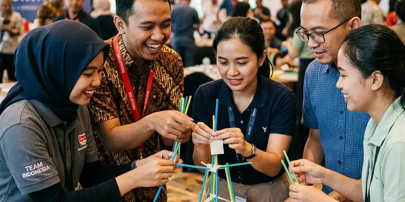

Outbound indoor adalah aktivitas team building yang dilaksanakan di dalam ruangan tertutup, dan tetap dapat menghadirkan keseruan setara aktivitas luar ruangan melalui permainan simulasi, tantangan kreatif, dan permainan berbasis komunikasi tim.
Ringkasan Inti
- Permainan simulasi dan escape room menjadi pilihan populer untuk outbound indoor.
- Workshop kreatif dapat menggantikan aktivitas fisik outdoor dengan nilai kolaborasi yang setara.
- Jumlah peserta dan luas ruangan menentukan jenis permainan yang paling sesuai digunakan.
- Musim hujan yang berlangsung sekitar enam bulan di sebagian wilayah Indonesia membuat opsi indoor semakin relevan disiapkan.
Apa Saja Ide Permainan Outbound Indoor yang Seru?
Ide permainan outbound indoor yang seru meliputi escape room kelompok, tantangan menyusun struktur dengan bahan terbatas, permainan tebak kata berkelompok, dan simulasi pengambilan keputusan tim dalam skenario tertentu.
Beberapa ide yang umum diterapkan penyelenggara acara indoor:
- Escape room kelompok, di mana peserta dibagi ke dalam tim kecil untuk memecahkan teka-teki dan menemukan solusi dalam batas waktu tertentu.
- Tantangan menyusun struktur, misalnya membangun menara menggunakan bahan sederhana seperti sedotan atau kertas, yang melatih strategi dan kerja sama cepat.
- Permainan tebak kata berkelompok, yang melatih komunikasi non-verbal dan kekompakan antar anggota tim.
- Simulasi pengambilan keputusan, di mana tim dihadapkan pada skenario tertentu dan harus mengambil keputusan bersama dalam waktu terbatas.
Setiap permainan ini dapat disesuaikan tingkat kesulitannya berdasarkan usia dan latar belakang peserta, sehingga tetap relevan digunakan baik untuk acara korporat maupun sekolah.

Tantangan kreatif seperti menyusun struktur dari bahan sederhana sangat efektif untuk melatih strategi dan kerja sama tim secara cepat.
Mengapa Outbound Indoor Bisa Tetap Efektif Membangun Kerja Sama Tim?
Outbound indoor bisa tetap efektif membangun kerja sama tim karena esensi utama outbound terletak pada tantangan kolaboratif dan komunikasi, bukan semata-mata pada lokasi pelaksanaan di luar ruangan.
Beberapa alasan mengapa pendekatan indoor tetap relevan:
- Permainan indoor tetap dapat dirancang dengan elemen kompetisi, strategi, dan pembagian peran yang menjadi inti dari aktivitas team building.
- Suasana ruangan tertutup justru dapat membantu peserta lebih fokus pada tantangan tanpa gangguan cuaca atau kondisi luar ruangan.
- Fasilitator dapat mengatur suasana ruangan, pencahayaan, dan musik untuk menciptakan atmosfer yang mendukung keterlibatan peserta.
- Aktivitas indoor umumnya lebih fleksibel dijadwalkan ulang dibanding aktivitas outdoor yang sangat bergantung pada kondisi cuaca.
Bagaimana Cara Memilih Ide Outbound Indoor Sesuai Jumlah Peserta?
Cara memilih ide outbound indoor sesuai jumlah peserta adalah dengan menyesuaikan luas ruangan, jumlah kelompok kecil yang dapat dibentuk, dan kompleksitas permainan dengan skala acara yang direncanakan.
Panduan praktis yang dapat digunakan penyelenggara:
- Untuk kelompok kecil di bawah dua puluh orang, permainan berbasis escape room atau simulasi pengambilan keputusan dapat memberikan pengalaman yang lebih mendalam.
- Untuk kelompok besar di atas lima puluh orang, permainan tebak kata berkelompok atau tantangan menyusun struktur lebih mudah diatur dalam beberapa kelompok paralel.
- Sesuaikan durasi permainan dengan total waktu acara, agar tidak terlalu singkat sehingga terasa terburu-buru atau terlalu panjang sehingga peserta kehilangan fokus.
- Pastikan ruangan yang digunakan memiliki sirkulasi udara yang baik, terutama jika acara berlangsung dalam waktu lama dengan jumlah peserta cukup banyak.
Kesimpulan
Outbound indoor dapat menjadi alternatif yang tidak kalah seru dibanding aktivitas outdoor, terutama saat musim hujan membuat aktivitas luar ruangan sulit dilaksanakan. Pemilihan jenis permainan yang tepat berdasarkan jumlah peserta dan tujuan acara menjadi kunci utama agar esensi kerja sama tim tetap tersampaikan meski dilakukan di dalam ruangan.
FAQ
Ya, sebagian besar permainan outbound indoor dapat disesuaikan tingkat kesulitannya sehingga cocok diikuti oleh berbagai kalangan usia peserta.
Escape room umumnya lebih efektif untuk kelompok kecil di bawah dua puluh orang agar setiap anggota tim dapat terlibat aktif dalam proses pemecahan teka-teki.
Sebagian permainan indoor memerlukan peralatan sederhana seperti kertas, sedotan, atau alat tulis, namun sebagian lainnya dapat dilakukan tanpa peralatan tambahan yang rumit.